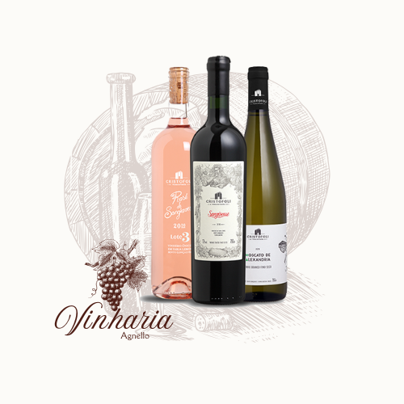

mais sobre nós
A Vinheria Agnello é uma empresa familiar, dirigida pelo proprietário Giulio e sua filha Bianca, que atua há mais de 15 anos com apenas uma loja física, que emprega mais 6 funcionários, entre a administração, estoques e vendas. Tanto os proprietários quanto seus 3 vendedores são profundos conhecedores do mundo dos vinhos, e usam esse conhecimento no atendimento dos clientes, que sempre demandam informações, recomendações e dicas. Essa troca de conhecimento, com cara de consultoria, é um dos pontos fortes da vinheria.
O mundo dos vinhos é bastante vasto e diverso, o que torna bastante difícil a tomada de decisão na hora da compra e da forma de consumo para a maioria do público consumidor. São cerca de 6.000 variedades de uvas viníferas no mundo, que adquirem características e sabores diferentes de acordo com a região, o clima, o solo e os cuidados em seu cultivo, sem contar com as diferentes técnicas de colheita, fermentação, processamento e armazenagem, que levam à produção de uma infinidade de vinhos capazes de atender aos paladares mais diversos. E tudo isso pode mudar a cada safra, cada ano de produção.
É impossível, portanto, que alguém possa conhecer ou experimentar todos os vinhos disponíveis no mercado, mas combinando estudo, leituras, visitações, trocas de informações e degustação frequente é possível maximizar as chances da escolha de um vinho que agrade seu paladar, ou ao menos minimizar as chances de cometer grandes erros na seleção de um vinho. O resto fica por conta da experimentação, da ocasião do consumo, da boa companhia ou de momentos especiais em que você pode acabar se deparando ao decorrer de sua vida como um jantar ou até mesmo um encontro.
Uma das particularidades relevantes dos vinhos é o risco de sua degradação, ou ao menos alteração de suas características de coloração, aromas e sabor, caso sejam mal armazenados, expostos por muito tempo à luz natural, temperaturas altas, ou mesmo quando expostos a vibrações ou movimentações constantes. Conhecedora desses riscos, a Vinheria Agnello adota cuidados especiais na armazenagem de seus vinhos, em especial com os vinhos de maior valor e vinhos raros, buscando assim garantir a seus clientes mais exigentes a qualidade original de cada garrafa, como recebida de seus fornecedores ou mesmo das vinícolas de origem.
Apesar de atender muitos clientes conhecedores de vinho, que compram com frequência e que desenvolvem constantemente seu paladar e seus conhecimentos, a grande maioria do público consumidor que frequenta a Vinheria Agnello é formada por pessoas com pouco conhecimento ou ainda principiantes no mundo do vinho e que dependem de ajuda na hora de escolher um vinho.
Clientes mais típicos em nossa Vinheria costumam rodar pela loja olhando os vinhos expostos nas prateleiras e bancadas, e quando atraídos por um rotulo, pegam a garrafa e tentam interpretar as informações que o rótulo apresenta, o que desperta inúmeras dúvidas e questionamentos.
É por essa razão, com as informações demonstradas a cima, que a orientação dos vendedores e o atendimento personalizado fazem a diferença. Uma questão é colocada frequentemente pelo sr.Giulio: É possível reproduzir essa experiência de compra no mundo virtual?
Prentendemos criar um chatbot que possa conversar em tempo real com nossos clientes sem que ocorram problemas e caso ocorra algum problema com nosso chatbot o cliente podera entrar em contato imediato com nossa equipe caso o problema não acabe se resolvendo sozinho com o chatbot ou com a rede.